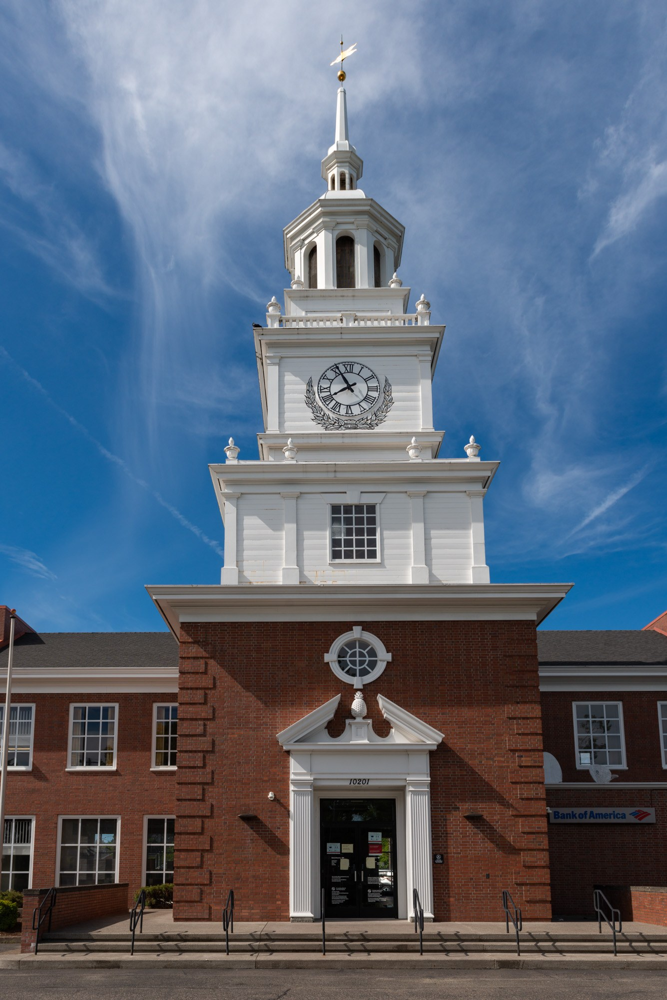

Как работает страхование банковских вкладов в США (FDIC)
FDIC — федеральная система, которая защищает деньги вкладчика государственной гарантией, даже если банк обанкротится. Покрытие автоматическое, до 250 000 долларов на вкладчика, в каждом застрахованном банке, по каждой категории владения. Вот как это работает.

FDIC — Федеральная корпорация страхования вкладов — независимое федеральное агентство, созданное Конгрессом в 1933 году и начавшее страховать банковские вклады в 1934 году. Оно было учреждено после волны банкротств банков в 1920-х и начале 1930-х, когда сбережения многих американцев были уничтожены, чтобы восстановить и поддерживать доверие населения к финансовой системе (Источник: FDIC — About the FDIC; FDIC — Deposit Insurance At A Glance).
Какая сумма застрахована
Стандартная сумма страхования — 250 000 долларов на вкладчика, в каждом застрахованном банке, по каждой категории владения счётом (FDIC, Deposit Insurance At A Glance). То есть лимит применяется не к одному счёту или к человеку в целом, а отдельно для каждого банка и каждой категории владения (Источник: FDIC — Deposit Insurance At A Glance; FDIC — Understanding Deposit Insurance).
Что покрывается, а что нет
Страхование покрывает только депозитные продукты: текущие счета (checking), сберегательные счета (savings), депозитные счета денежного рынка и депозитные сертификаты (CD). Оно НЕ покрывает взаимные фонды, аннуитеты, полисы страхования жизни, акции и облигации, криптоактивы и содержимое банковских сейфов — даже если они куплены через банк (Источник: FDIC — Deposit Insurance).

Категории владения и увеличение покрытия
Вклады в одной категории владения в одном банке суммируются для лимита в 250 000 долларов. Но распределение денег по разным категориям владения может застраховать человека более чем на 250 000 долларов в одном банке. Признаваемые категории включают индивидуальные счета, совместные счета, некоторые пенсионные счета (например, IRA) и трастовые счета. Например, индивидуальный счёт и счёт IRA в одном банке застрахованы каждый до 250 000 долларов, поскольку это разные категории. По правилу, действующему с 1 апреля 2024 года, трастовые вклады застрахованы на 250 000 долларов на каждого бенефициара, но не более 1 250 000 долларов (при пяти и более бенефициарах) в одном банке (Источник: FDIC — Understanding Deposit Insurance).
Автоматическое и с государственной гарантией
Покрытие автоматическое: FDIC указывает, что «FDIC insurance coverage is automatic when you open a deposit account at an FDIC-insured bank» — как только вы открываете депозитный счёт в застрахованном банке, покрытие действует; отдельная заявка не нужна, и вкладчик за него не платит (взносы платят банки). Страхование вкладов обеспечено полным доверием и кредитом правительства США (Источник: FDIC — Deposit Insurance At A Glance; FDIC — Understanding Deposit Insurance).
Как проверить, застрахован ли банк в FDIC
Есть несколько способов подтвердить, что банк застрахован: воспользоваться инструментом поиска BankFind на fdic.gov или позвонить по номеру 1-877-ASK-FDIC; застрахованные банки размещают официальный знак FDIC в своих отделениях. Инструмент EDIE (Electronic Deposit Insurance Estimator) рассчитывает, какая часть ваших денег застрахована (Источник: FDIC — Deposit Insurance At A Glance; FDIC — Understanding Deposit Insurance).
Кредитные союзы: страхование NCUA
Вклады в кредитных союзах защищены не FDIC, а Национальным фондом страхования долей кредитных союзов (NCUSIF), которым управляет Национальная администрация кредитных союзов (NCUA). Созданный Конгрессом в 1970 году, он страхует вклады до того же лимита в 250 000 долларов и также обеспечен полным доверием и кредитом США (Источник: NCUA — Share Insurance Coverage).
История: терял ли кто-нибудь застрахованные средства
По данным FDIC — нет: «Since FDIC insurance began in 1934, no depositor has lost a single penny of insured funds due to bank failure» (FDIC, About the FDIC) — с момента начала страхования в 1934 году ни один вкладчик не потерял ни цента застрахованных средств из-за банкротства банка. NCUA сообщает то же самое по кредитным союзам. Эта статья носит общий характер; по вашей конкретной ситуации обратитесь в свой банк или в FDIC/NCUA (Источник: FDIC — About the FDIC; NCUA — Share Insurance Coverage).